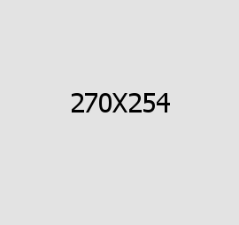
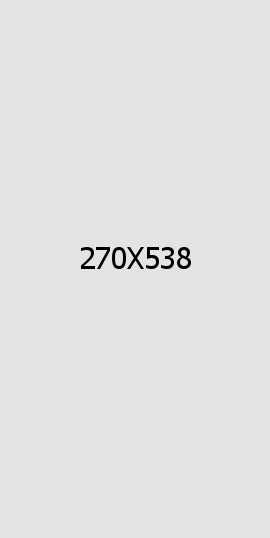

Hacemos empresa respetando nuestro entorno y al medio ambiente.
Nuestra historia



Empresa 100% uruguaya desde 2006
Nutrición animal con identidad uruguaya
Nutrisur nació de la experiencia de campo y del conocimiento profundo del productor uruguayo.
Luego de más de 20 años trabajando en el sector ganadero, los veterinarios Carlos Velázquez y Ramón Juambeltz apostaron en 2006 a crear Nutrisur: una empresa pensada para brindar soluciones nutricionales concretas, adaptadas a las necesidades reales del productor.
Aunque los orígenes de Nutrisur se asocian a la producción lechera, hoy ofrecemos soluciones para la ganadería de carne, avicultura, porcicultura y mascotas. Nos esforzamos por promover métodos más eficientes y respetuosos del entorno.
-
Ética empresarial
-
Cercanía al productor
Nos adelantamos a los requerimientos del productor y sus animales.
-
00
Año de fundación
-
00
Años junto al productor
-
00
Rubros atendidos
-
00
Productos en portafolio
Línea del tiempo
Nuestra historia en Uruguay
Desde el tambo hasta el feedlot, desde la producción lechera hasta las mascotas: la historia de Nutrisur es la historia del agro uruguayo moderno.
2006
Fundación de Nutrisur
Los veterinarios Carlos Velázquez y Ramón Juambeltz fundan Nutrisur en Juanicó, Canelones. El foco inicial es la nutrición de vacas lecheras, respondiendo a una necesidad concreta del sector.
2010+
Expansión a nuevos rubros
Nutrisur amplía su portafolio hacia ganadería de carne, avicultura y porcicultura. El desarrollo de Nutribroiler, Nutrilayer y Nutripig consolida la empresa como referente en nutrición pecuaria nacional.
2020+
Crecimiento e innovación
Incorporación de nuevas líneas de productos, Feed Solutions (Thermo Plus, Feedsteam) y expansión de los premixes avícolas y porcinos. Nutrisur se consolida como referente técnico a nivel nacional y regional.
Hoy
Integración a Grupo Nutec
Nutrisur pasa a operar bajo el respaldo de Grupo Nutec, empresa líder fundada en México en 1995 y presente en más de 15 países. Sumamos tecnología de clase mundial manteniendo nuestra identidad y cercanía con el productor uruguayo.
Lo que nos guía
Visión, Misión y Valores
Visión
Aspiramos a ser un referente técnico y empresarial en nutrición animal a nivel nacional y regional. Seremos líderes en el mercado uruguayo, acompañando el crecimiento sostenible del sector agropecuario.
Misión
Con nuestro estilo de producción y desarrollo empresario, procuramos dejar un legado en nuestro equipo y en el sector de actividad. Brindamos soluciones que acompañen las necesidades de productividad y tecnología de los productores.
Equipo
Somos trabajadores, técnicos y emprendedores. Nos esforzamos para brindar las mejores soluciones, nos adelantamos a los requerimientos y promovemos métodos más eficientes. Hacemos empresa de forma ética, respetando nuestro entorno.
Respaldo internacional
El respaldo de Grupo Nutec
Nutrisur opera como parte de Grupo Nutec, empresa líder en nutrición animal fundada en Querétaro, México en 1995. Presencia en más de 15 países, tres plantas especializadas y más de 30 años de investigación.
Esta integración nos permite llevar al campo uruguayo tecnología de vanguardia, sin perder la identidad, la cercanía y el conocimiento local que siempre nos caracterizaron.
Conocer Grupo Nutec3 Plantas especializadas
Planta NUTEC JCF (petfood), Euro-Nutec (premixes vitamínico-minerales) y planta pecuaria. Sin contaminación cruzada.
SANUREN — Investigación
Specialized Animal Nutrition Research Network: red de investigación en nutrición de mascotas, avicultura y porcicultura.
ISO 22000 · FSSC · HACCP
Certificaciones internacionales de inocuidad alimentaria en toda la cadena de suministro. Laboratorio acreditado por EMA.
+15 países
Presencia internacional consolidada. Desde México hasta Europa y América Latina, incluyendo Uruguay a través de Nutrisur.
Nutrisur opera como parte de Grupo Nutec — empresa líder en nutrición animal desde 1995. Conocer Grupo Nutec →